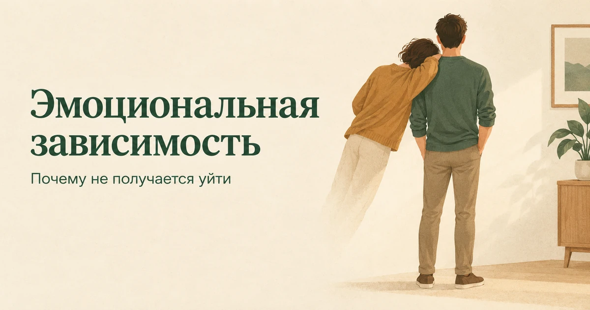
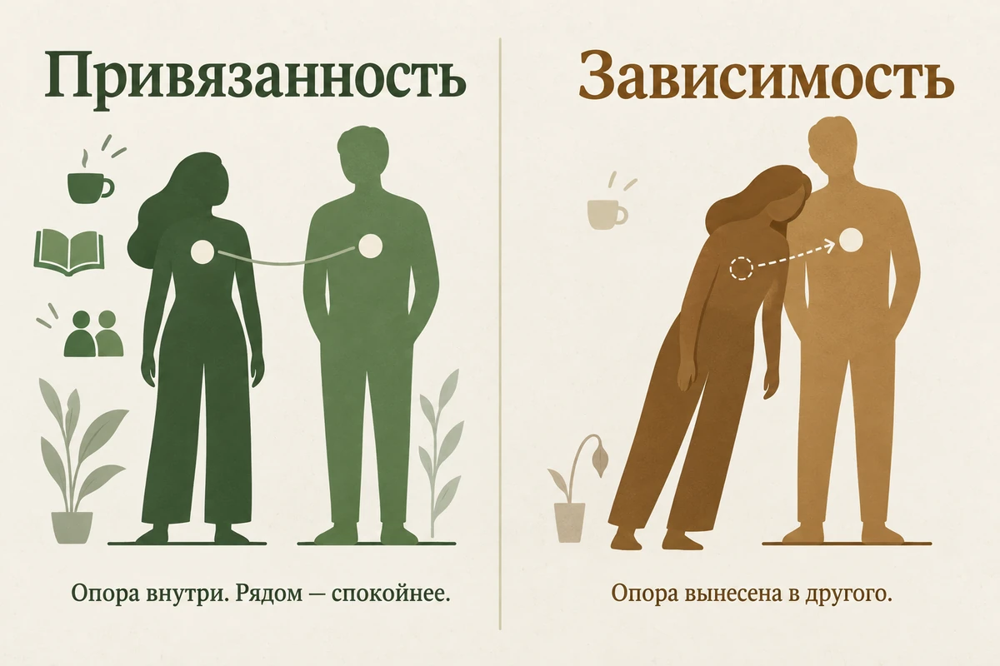
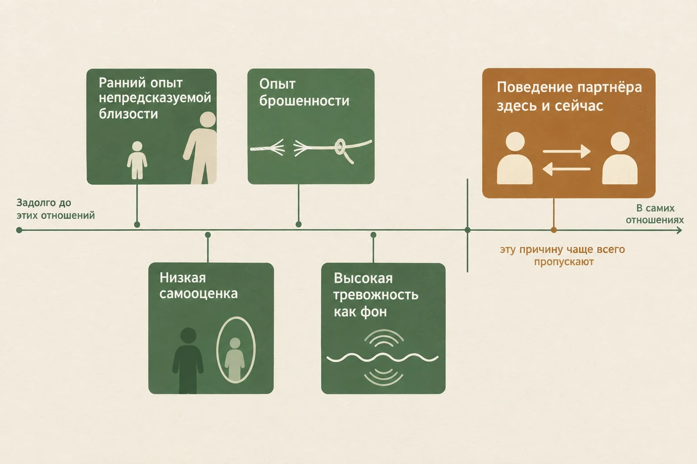
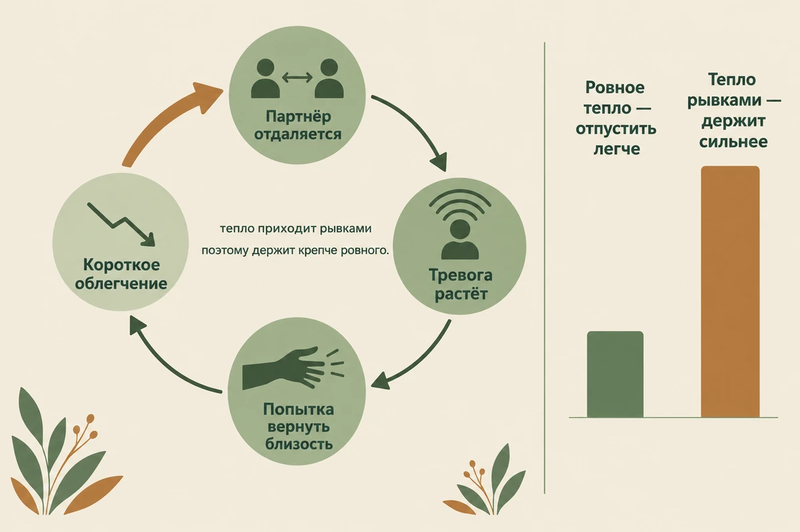
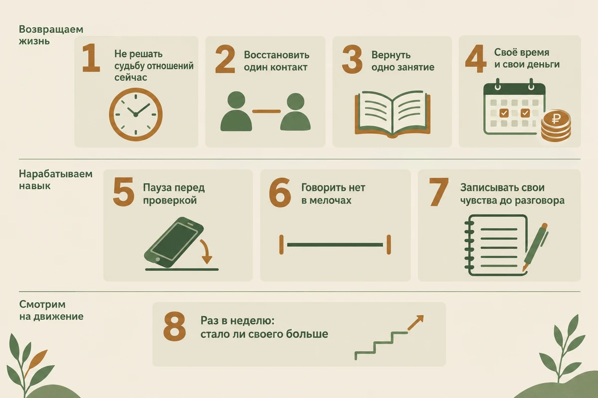

Главная → Блог → Эмоциональная зависимость
Эмоциональная зависимость: 9 признаков и как из неё выйти
Обновлено: 07.09.2026 · 12 минут чтения

Эмоциональная зависимость — это когда ваше спокойствие и самооценка держатся не на вас, а на другом человеке. Пока он рядом и доволен, всё в порядке; стоит ему отдалиться — почва уходит из-под ног. Это не слабость характера и не «неумение любить»: так устроенная привязанность формируется задолго до конкретных отношений, а конкретные отношения её только проявляют. Ниже — по каким признакам её узнают, чем она отличается от любви и от токсичных отношений, почему не получается уйти, даже когда давно понятно, что надо, и что делать, чтобы вернуть себе опору.
- Что такое эмоциональная зависимость
- 9 признаков
- Зависимость или любовь: в чём разница
- Почему она возникает
- Почему не получается уйти
- Зависимость, токсичные отношения и насилие
- Созависимость: что это слово значит на самом деле
- 8 шагов, чтобы вернуть себе опору
- Что делать, когда накрывает
- Пять ошибок, которые затягивают
- Когда нужен специалист
- Частые вопросы
Что такое эмоциональная зависимость
Начнём с честной оговорки: «эмоциональная зависимость» — не медицинский диагноз. Этого термина нет в классификациях болезней, его не ставят и по нему не лечат. Это рабочее описание, которым пользуются психологи, чтобы обозначить устойчивый способ строить близость — такой, при котором внутренняя опора вынесена наружу, в другого человека.
В классификациях есть похожее по звучанию «зависимое расстройство личности», но это про другое: про пожизненный, а не про конкретные отношения, паттерн, и определяет его врач. Большинство людей, которые узнают себя в этой статье, никаким расстройством не страдают. У них другая история — способ привязываться, который когда-то был единственно возможным, а теперь дорого обходится.
Практическая разница между зависимостью и обычной сильной привязанностью проходит по одному вопросу: остаётесь ли вы кем-то, когда другого человека нет рядом. В здоровой привязанности разлука неприятна, но вы продолжаете функционировать: работаете, встречаетесь с друзьями, что-то чувствуете по своему поводу. При зависимости в отсутствие партнёра наступает не грусть, а обесточивание — как будто вас выключили до его возвращения.

9 признаков
Ни один пункт по отдельности ничего не доказывает — у каждого бывают тяжёлые периоды. Смотреть стоит на то, сколько пунктов набирается разом и как долго это длится.
- Настроение дня задаёт другой человек. Не ответил на сообщение — день испорчен; написал тепло — всё наладилось.
- Вы всё время сканируете его состояние. Тон голоса, скорость ответа, выражение лица — вы считываете это раньше, чем собственные чувства.
- Свои желания стали неразличимы. На вопрос «а чего хочешь ты?» честный ответ — «не знаю».
- Круг общения сузился. Друзья отпали сами собой, и вы уже не помните, когда виделись с кем-то без партнёра.
- Страх потерять сильнее радости быть вместе. Хорошие моменты вы проживаете с тревогой, что они кончатся.
- Вы соглашаетесь на то, что вам не подходит. И называете это гибкостью, хотя внутри копится обида.
- Расставание кажется физически невыносимым. Не грустным, а именно невыносимым — как будто вы не выживете.
- Вы уходили и возвращались. Несколько раз, каждый раз всерьёз.
- Самооценка колеблется вместе с его отношением. Похвалил — вы чего-то стоите, отдалился — вы никто.
Последний пункт стоит проверить отдельно: очень часто зависимость держится не на партнёре, а на хрупкой самооценке, которая просто нашла себе внешний источник. Посмотреть на неё в отрыве от отношений помогает шкала самооценки Розенберга — десять утверждений, результат сразу и без регистрации.
Зависимость или любовь: в чём разница
Это самый частый и самый болезненный вопрос, потому что изнутри и то и другое ощущается как «очень сильно люблю». Различие не в интенсивности, а в направлении: любовь жизнь расширяет, зависимость — сужает.
| Признак | Привязанность | Зависимость |
|---|---|---|
| Что происходит с вашей жизнью | Появляются новые интересы и люди | Круг общения и занятий сужается |
| Фон отношений | Спокойствие, из которого можно уйти в дела | Постоянная тревога, что всё оборвётся |
| Разлука | Скучаете, но живёте своей жизнью | Обесточивает, всё теряет смысл |
| Конфликт | Спорите и остаётесь собой | Соглашаетесь на всё, лишь бы не отдалился |
| Ваши желания | Вы их знаете и называете | Вы не помните, чего хотите сами |
| Мысль о будущем | Скорее радует | Пугает, но уйти страшнее |
Если таблица не даёт однозначного ответа, ответьте себе на пять вопросов — коротко, да или нет.
- У меня сохранились друзья и занятия, не связанные с этим человеком?
- Я могу спокойно не получать ответ несколько часов?
- Я могу сказать «нет» без паники, что за этим последует?
- Я понимаю, чего хочу сам, отдельно от того, чего хочет он?
- Моя самооценка остаётся примерно ровной независимо от его настроения?
Если большинство ответов отрицательные, дело, скорее всего, не в том, что вы слишком сильно любите, а в том, что опора слишком сильно вынесена в отношения.
Главный вопрос не «насколько сильно я его люблю», а «остаётся ли у меня собственная жизнь, когда его нет рядом».
Есть и простая проверка на будущее, которую легко сделать в одиночку. Представьте, что отношения продлятся ровно такими же ещё пять лет: ничего не улучшится и не ухудшится. При привязанности эта картинка скорее приятна. При зависимости она вызывает ужас — и одновременно мысль «а уйти всё равно страшнее». Вот этот зазор и есть главный признак.
Почему она возникает
Причины почти никогда не лежат в текущих отношениях целиком. Обычно набирается несколько сразу.
- Ранний опыт непредсказуемой близости. Если в детстве близкий взрослый то был рядом, то исчезал — эмоционально или физически, — ребёнок учится главному навыку: не расслабляться и всё время отслеживать чужое состояние. Во взрослом возрасте этот навык никуда не девается. Исследования привязанности показывают, что именно ненадёжный тип связан с более высокой эмоциональной зависимостью от партнёра, и посредником выступает страх отвержения. При этом детский опыт — не обязательное объяснение: зависимость складывается и у людей со спокойным детством, после отвержения, измены или болезненного расставания. Соседняя тема — следы детских травм во взрослой жизни; если хотите посмотреть на свой ранний опыт системно, есть опросник ACE о неблагоприятном детском опыте.
- Низкая самооценка. Если человек в глубине не считает себя ценным сам по себе, отношения становятся единственным доказательством обратного. Потерять их — значит потерять доказательство.
- Опыт брошенности во взрослом возрасте. Резкий уход, измена, внезапный разрыв — после такого нервная система нередко перенастраивается на режим «держать крепче».
- Высокая тревожность как фон. Иногда зависимость — не отдельная проблема, а тема, которую нашла себе тревога. Признак простой: тревожно не только в отношениях, а более или менее везде. Проверить фон можно шкалой DASS-21 — она разводит депрессию, тревогу и стресс.
- Поведение партнёра здесь и сейчас. Пятая причина стоит особняком и её часто пропускают: если человек систематически то приближается, то отдаляется, зависимость может сформироваться и у того, у кого её раньше не было. Это не значит, что вы «сами всё придумали».

Почему не получается уйти
Самый частый вопрос звучит так: «я всё понимаю, почему я до сих пор здесь?» Ответ снимает много вины: скорее всего, дело не в слабости воли, а в том, как устроено само чередование близости и отдаления.
Если бы партнёр вёл себя стабильно плохо, уйти было бы сравнительно проще. Трудность создаёт именно непредсказуемость: холод, потом внезапное тепло, потом снова холод. Когда облегчение приходит после тревоги и приходит неожиданно, человек начинает особенно сильно ждать следующего такого момента — и живёт от него до него, а не от общего положения дел. Это один из механизмов, которые могут поддерживать зависимое поведение; единственным объяснением он не является.
К этому добавляются две вещи. Первая — ощущение вложенного: годы, силы, общие планы, которые «жалко выбрасывать». Вторая — сужение жизни, которое произошло по дороге: чем меньше у человека осталось своего, тем страшнее оказаться с этим «своим» один на один.

Зависимость, токсичные отношения и насилие
Эти три вещи часто называют одним словом, и от этого путаница. Разводить их важно, потому что делать в каждом случае нужно разное.
Эмоциональная зависимость — про вас: про то, где у вас опора. Она возможна и в отношениях с хорошим, заботливым человеком, который ничего плохого не делает.
Токсичные отношения — про то, что происходит между вами: про обесценивание, вечные упрёки, качели «то люблю, то ненавижу». Тут дело уже не только в вашей опоре, и одной работой над собой это не решается.
Насилие — отдельная категория, и это не крайняя степень первых двух. Признаки: угрозы, запреты на встречи с близкими, контроль денег и перемещений, физическая сила. Здесь не работают ни техники, ни разговоры «по душам», и вопрос стоит не о том, как перестать зависеть, а о безопасности.
| Зависимость | Токсичные отношения | Насилие | |
|---|---|---|---|
| О чём речь | Где находится ваша опора | Что происходит между вами | Контроль и причинение вреда |
| Бывает с хорошим партнёром | Да | Нет | Нет |
| Что в первую очередь | Вернуть себе опору | Оценить отношения и границы | Обеспечить безопасность |
| Хватит ли работы над собой | Да | Частично | Нет, она безопасность не заменяет |
Созависимость: что это слово значит на самом деле
«Созависимость» и «эмоциональная зависимость» в разговоре давно смешались, но у первого слова есть конкретное происхождение. Оно пришло из практики помощи семьям людей с алкогольной и наркотической зависимостью и описывало жизнь близкого, полностью подчинённую чужой болезни: он спасает, покрывает, скрывает от окружающих, контролирует дозы и постепенно перестаёт существовать отдельно.
Со временем термин расползся и стал означать любые отношения, в которых один растворяется в другом. Это удобно, но за расплывчатость его критикуют и в профессиональной среде: чёткого определения у созависимости нет, диагнозом она не является, а как ярлык работает скорее во вред — человек получает объяснение вместо разбора конкретной ситуации.
Практический вывод простой. Если рядом с вами человек с алкогольной или другой зависимостью, слово «созависимость» описывает вашу ситуацию точно, и помощь тут нужна отдельная — в том числе вам, а не только ему. Если зависимости нет, а есть растворение в партнёре, точнее говорить об эмоциональной зависимости и разбирать её механизм, а не сортировать себя по категориям. Кстати, если алкоголь появился в вашей жизни как способ переживать эти отношения, посмотрите, как он связан с тревогой, — а оценить собственное употребление можно тестом AUDIT.
8 шагов, чтобы вернуть себе опору
Порядок здесь не случайный: первые шаги можно сделать, не принимая никаких решений об отношениях. Решения принимаются потом и гораздо легче.
- Не принимайте решение из пика тревоги. Пока опоры нет, решение принимается из паники — и, скорее всего, отменяется через неделю. Если отношения безопасны, дайте себе время: сначала вернуть опору, потом смотреть на ситуацию. Но если есть угрозы, контроль или физическая сила, ждать нельзя — там приоритет безопасность, а не восстановление опоры.
- Восстановите один контакт. Не круг общения целиком — одного человека, с которым вы перестали видеться. Одна встреча в две недели уже меняет ощущение, что кроме партнёра у вас никого нет.
- Верните одно занятие. То, что было вашим до этих отношений и отпало по дороге. Не ради развития, а чтобы у дня появилась точка, не связанная с другим человеком.
- Заведите своё время и свои деньги. Два вечера в неделю, которые принадлежат вам без объяснений, и сумма, которую вы тратите, ни перед кем не отчитываясь. Это звучит мелко и работает сильнее почти всего остального.
- Тренируйтесь переживать тревогу без проверки. Когда тянет написать первым, позвонить, выяснить, — засеките тридцать минут. Тревога за это время обычно начинает спадать сама, и вы получаете нужный опыт: она проходит и без ответа партнёра. Механика тут та же, что у ревности с проверками телефона.
- Учитесь говорить «нет» в мелочах. Начинать с крупного бесполезно. Откажитесь от одного необязательного дела, скажите, что не хотите этот фильм. Подробнее — в статье про личные границы.
- Записывайте, что вы чувствуете, до разговора с партнёром. Пять строк в заметках. Смысл в том, чтобы обнаружить собственное состояние раньше, чем оно будет подстроено под чужое.
- Замечайте, что меняется. Раз в неделю отвечайте себе на один вопрос: стало ли у меня в жизни хоть немного больше своего. Это единственный показатель, который здесь имеет значение.

Что делать, когда накрывает и хочется написать
Отдельный короткий протокол на тот момент, когда он не отвечает второй час и вы уже тянетесь к телефону. Пройдите его письменно — на бумаге или в заметках, это важно: в голове пункты сливаются.
- Что произошло фактически? Только то, что можно было бы показать другому человеку: «не отвечает с 19:00».
- Что я к этому предполагаю? Всё, что вы достроили: «ему стало неинтересно», «он с кем-то».
- Чего я на самом деле боюсь? Обычно под конкретным страхом лежит один и тот же: что меня оставят.
- Что мне хочется сделать прямо сейчас? Назовите порыв вслух — написать, позвонить, проверить сторис.
- Могу я отложить это на 30 минут? Не навсегда — на полчаса. Это выполнимо почти всегда.
- Что я сделаю для себя за эти полчаса? Одно конкретное дело: выйти на улицу, принять душ, позвонить другу.
Смысл не в том, чтобы запретить себе написать. Смысл в том, чтобы между порывом и действием появился зазор — и вы получили опыт, что тревога спадает сама, без ответа с той стороны.
Бывает, что механизм понятен, а внутри всё равно паника: он не отвечает второй час, и вы уже написали три сообщения. В такие моменты помогает разобрать один конкретный эпизод — что произошло на самом деле, что вы к этому достроили и чего испугались. Анонимно, без записи, круглосуточно.
Разобрать свою ситуациюПять ошибок, которые затягивают
- Ставить ультиматумы. «Или ты меняешься, или я ухожу», сказанное на пике, обычно заканчивается тем, что вы остаётесь, а ваши слова обесцениваются.
- Ждать, пока изменится партнёр. Даже если он действительно неправ, ваша опора не появится от его изменений — она появляется только у вас.
- Уходить в новые отношения сразу. Если внутренние причины не изменились, привычный сценарий привязанности может повториться уже с другим человеком — а решать, что дело было в предыдущем, станет только труднее.
- Заглушать состояние алкоголем. Он снимает тревогу на вечер и возвращает её утром усиленной — этот круг описан отдельно.
- Требовать от себя разлюбить. Чувства не выключаются по решению, и попытка их отменить добавляет только вину. Задача не в том, чтобы перестать любить, а в том, чтобы перестать исчезать.
Когда нужен специалист
Поводы обратиться, не дожидаясь, пока «само пройдёт»:
- вы уходили и возвращались несколько раз и каждый раз всерьёз;
- мысли о партнёре занимают несколько часов в день и мешают работать;
- вы отказались от важного — работы, учёбы, близких — ради этих отношений;
- появилось стойкое ощущение, что без этого человека жизни не будет;
- есть мысли навредить себе.
Работают обычно не с «зависимостью» напрямую, а с тем, что под ней. Когнитивно-поведенческая терапия помогает разобрать автоматические мысли вроде «если он отдалился, значит я плохой» и отказаться от проверок; схема-терапия добирается до раннего страха быть брошенным, из которого всё обычно и растёт. Если тревога выражена сильно, имеет смысл параллельно показаться врачу.
Частые вопросы
Что такое эмоциональная зависимость от человека?
Это состояние, при котором собственное спокойствие и самооценка держатся на другом человеке: пока он рядом и доволен — вы в порядке, стоит ему отдалиться — почва уходит из-под ног. Формально это не диагноз, а описание устойчивого способа строить близость, поэтому его не «ставят», а замечают по набору признаков. Ключевой из них — не сила чувств, а потеря опоры в себе: решения, настроение и планы начинают зависеть от чужой реакции.
Чем эмоциональная зависимость отличается от любви?
Разница не в силе чувства, а в том, что происходит с вами внутри отношений. Любовь обычно расширяет жизнь: остаются друзья, работа, интересы, а рядом с человеком спокойнее. Зависимость сужает: круг общения тает, интересы кажутся неважными, а вместо спокойствия появляется постоянный фоновый страх потерять. Простая проверка — представьте, что отношения продлятся такими же ещё пять лет. При любви это скорее радует, при зависимости пугает, но уйти всё равно страшнее.
Почему я не могу уйти, хотя мне плохо?
Скорее всего, дело не в слабости воли. Когда тепло приходит непредсказуемо — то холод, то внезапная нежность, — фиксация на отношениях обычно усиливается: человек начинает жить от одного момента облегчения до следующего, а не от общего положения дел. Сюда добавляется страх остаться ни с чем и ощущение вложенных лет. Поэтому «просто уйти» редко срабатывает, а помогает постепенное возвращение себе опоры за пределами этих отношений.
Эмоциональная зависимость и созависимость — это одно и то же?
Нет, хотя в обиходе слова смешивают. Созависимость — понятие из практики помощи семьям людей с алкогольной и наркотической зависимостью: оно описывает жизнь, подчинённую чужой болезни, где близкий спасает, покрывает и контролирует. Эмоциональная зависимость шире и не требует ничьей химической зависимости. Ни то, ни другое не является медицинским диагнозом, и оба термина критикуют за расплывчатость — пользоваться ими стоит как рабочим описанием, а не как ярлыком.
Как избавиться от эмоциональной зависимости самостоятельно?
Начните не с решения об отношениях, а с возвращения себе жизни: восстановите один контакт, верните одно занятие, заведите свои деньги и своё время. Дальше учитесь переживать тревогу без немедленной проверки — не писать первым сразу, а дать себе тридцать минут. Изменения обычно требуют времени, и небольшие шаги оказываются реалистичнее, чем попытка разорвать всё усилием воли. Если вы уходили и возвращались несколько раз или чувствуете, что не справляетесь, разумнее обратиться к специалисту.
Нужно ли расставаться, если я эмоционально зависим от партнёра?
Сама по себе эмоциональная зависимость не означает, что отношения нужно заканчивать: она возможна и рядом с заботливым, надёжным человеком. Сначала стоит ответить на два других вопроса — безопасны ли эти отношения и что происходит с вашей собственной опорой. Решение обычно даётся легче, когда опора уже частично вернулась. Исключение одно: если есть угрозы, контроль или физическая сила, вопрос стоит не о зависимости, а о безопасности.
Как перестать постоянно думать о человеке и ждать сообщения?
Начните с паузы между желанием проверить и самой проверкой: заметьте порыв, засеките тридцать минут и займите это время чем-то своим. Тревога за это время обычно начинает спадать сама, и вы получаете опыт, что она проходит и без ответа. Помогает убрать лишние поводы для проверок — отключить уведомления и статусы «онлайн». Если мысли занимают несколько часов в день и мешают работать, это повод обратиться к специалисту.
Статья носит просветительский характер и не заменяет консультацию специалиста. Если вам прямо сейчас невыносимо тяжело или появляются мысли о том, чтобы причинить себе вред, позвоните: 112 — при угрозе жизни; +7 (495) 989-50-50 — круглосуточная линия ЦЭПП МЧС России; 8-800-2000-122 (с мобильного — 124) — детям, подросткам и их родителям; 051 (с мобильного 8 (495) 051) — для Москвы. Куда ещё можно обратиться бесплатно — в справочнике помощи.
Читать также
- Токсичные отношения: 12 признаков и как из них выйти — если дело не только в вашей опоре.
- Личные границы: 8 шагов, чтобы перестать всем угождать — как говорить «нет» без чувства вины.
- Ревность: почему возникает и как перестать себя мучить — про тот же механизм проверок и заверений.
- Тест на ревность — 15 вопросов о мыслях, чувствах и поступках, результат сразу.
- Как повысить самооценку: 8 шагов — про то, что чаще всего лежит под зависимостью.
- Как пережить расставание и отпустить человека — если отношения всё-таки закончились.
- Как справиться с одиночеством — про страх, который держит сильнее всего.
Материал подготовлен командой AI Therapist и основан на доказательных подходах к работе с тревогой и отношениями — когнитивно-поведенческой терапии (КПТ) и схема-терапии. Мы намеренно оговариваем, что «эмоциональная зависимость» и «созависимость» не являются медицинскими диагнозами: это рабочие описания, а не категории классификаций болезней. Статья носит просветительский характер, не является медицинской рекомендацией и не заменяет консультацию специалиста.
Источники: Momeñe J., Estévez A., Griffiths M. D., Macía P. «The Impact of Insecure Attachment on Emotional Dependence on a Partner», Behavioral Sciences, 2024 — о связи ненадёжной привязанности с эмоциональной зависимостью и роли страха отвержения, NHS — Raising low self-esteem, NHS — Anxiety, fear and panic — о том, как проверки и поиск заверений закрепляют тревогу, NHS — Getting help for domestic violence, ВОЗ — Violence against women. Источники проверены 07.09.2026.
Кто отвечает за содержание сайта и по каким правилам мы готовим материалы — на странице о проекте.